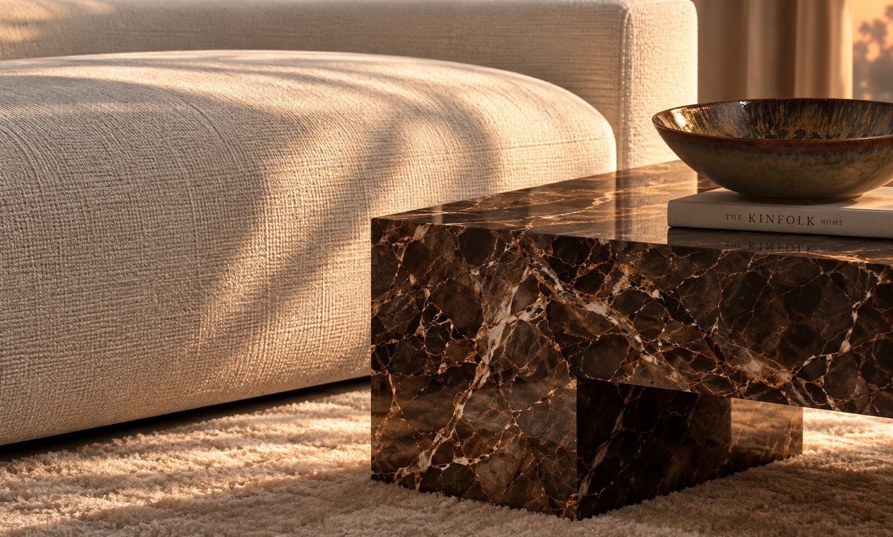

Architecture
d’intérieur
à Annecy.
Depuis Cessy, LK Architecture accompagne aussi les particuliers d’Annecy et des rives du lac dans la création d’intérieurs singuliers : appartements et maisons, de la première idée jusqu’au dernier détail.
Chaque projet est pensé sur mesure, à partir de votre façon de vivre — pour un lieu qui ne ressemble à personne, mais à vous.

-
01
Conseil & concept
À l’écoute de vos envies : optimisation des espaces, concept décoratif et moodboards, pour une direction claire avant toute décision.
-
02
Plans & visuels 3D
Plans d’aménagement, plans d’implantation et visuels 3D : voir votre intérieur avant qu’il n’existe.
-
03
Matières & suivi
Matériaux, couleurs, mobilier et luminaires, listes d’achats, choix des artisans et accompagnement esthétique des travaux.
Zone d’intervention
Annecy
et son lac
Annecy · Annecy-le-Vieux · Seynod · Cran-Gevrier · Meythet · Épagny Metz-Tessy · Sévrier · Veyrier-du-Lac · Menthon-Saint-Bernard · Talloires
Ainsi que le Pays de Gex et Genève.
Parlons de votre projet